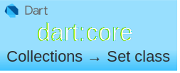

Dart: Collections → Set เบื้องต้น

Set (Set class) เป็นข้อมูลประเภท collection ที่ใช้เก็บข้อมูลสมาชิกที่ไม่ซ้ำกัน และไม่มีการเรียงลำดับข้อมูล ใครมาก่อนก็อยู่ก่อน หากเพิ่มสมาชิกใหม่แล้วซ้ำกับข้อมูลที่มีอยู่ก็จะตัดทิ้ง ข้อมูลสมาชิกของ Set จะประกาศอยู่ในเครื่องหมายปีกกา {...}
void main() {
var mySet = {'Y', 'M', 'C', 'A'};
print(mySet); // output → {Y, M, C, A}
print(mySet.length); // output → 4
print(mySet.first); // output → Y
print(mySet.last); // output → A
mySet.add('X'); // add new member
print(mySet); // output → {Y, M, C, A, X}
mySet.addAll({'Z', 'A'}); // add by Set (Set is Iterable)
print(mySet);// output → {Y, M, C, A, X, Z}
mySet.addAll(['Z', 'T']); // add by List (List is Iterable)
print(mySet);// output → {Y, M, C, A, X, Z, T}
}
การสร้าง Set
การสร้าง Set ใหม่สามารถทำได้โดยใช้วงเล็บปีกกา {...} ในการกำหนด Set ใหม่ ตัว Set รองรับการกำหนดประเภทข้อมูลผ่าน Generic

ข้อควรระวังในการประกาศ Set ว่าง (empty Set) เนื่องจากข้อมูล Set และ Map ใช้เครื่องหมาย วงเล็บปีกกา {...} เหมือนกัน หากประกาศตัวแปรแบบ var และ {} เท่านั้น จะทำให้ compiler ตีความว่าเป็นข้อมูล Map ไม่ใช่ Set
void main() {
var myEmptySet1 = <String>{};
Set<String> myEmptySet2 = {}; // same as myEmptySet1
var itIsMapNotSet = {}; // ❎ warning!! not use this form to declare empty Set
var mySet1 = {'Y', 'M', 'C', 'A'}; // Set of <String>
var mySet2 = <String>{'Y', 'M', 'C', 'A'}; // same as mySet1
Set<String> mySet3 = {'Y', 'M', 'C', 'A'}; // same as mySet1
mySet3.add('K'); // OK
mySet3.add(10); // error → The argument type 'int' can't be assigned to the parameter type 'String'.
}
การสร้าง Set แบบไม่สามารถเปลี่ยนแปลงค่าได้ (unmodifiable Set)
หากต้องการสร้าง Set ที่ไม่สามารถเปลี่ยนแปลงค่าได้ (แก้ไขค่า/เพิ่ม/ลด สมาชิกใน Set) สำหรับไว้ใช้งาน ให้ใช้ keyword const ในการประกาศ Set
void main() {
const mySet1 = {0, 1, 2};
const Set<int> mySet2 = {0, 1, 2}; //same as mySet1
var mySet3 = const {0, 1, 2}; //same as mySet1
var mySet4 = const <int>{0, 1, 2}; //same as mySet1
var mySet5 = const <int>{...mySet1}; // use other Set as init data
print(mySet5); // output → {0, 1, 2}
mySet1.add(10); // error → Unsupported operation: Cannot change an unmodifiable set
mySet2.add(20); // error → Unsupported operation: Cannot change an unmodifiable set
mySet2.removeAll({0, 1}); // error → Unsupported operation: Cannot change an unmodifiable set
}
อีกวิธีคือการสร้างด้วย .unmodifiable() constructor ตามตัวอย่างดังนี้ (ดู API เพิ่มเติม)
void main() {
var mySet1 = Set.unmodifiable({0, 1, 2}); // use Set elements as init data
var mySet2 = Set.unmodifiable([0, 1, 2]); // use List elements as init data
var mySet3 = Set.unmodifiable(mySet1); // use other Set as init data
mySet1.add(10); // error → Unsupported operation: Cannot change an unmodifiable set
mySet2.add(20); // error → Unsupported operation: Cannot change an unmodifiable set
mySet3.removeAll({0, 1}); // error → Unsupported operation: Cannot change an unmodifiable set
}
การเข้าถึงและตรวจสอบการมีอยู่ของสมาชิกภายใน Set
การเข้าถึงตามตำแหน่งของสมาชิก
การเข้าถึงสมาชิกใน Set ตามตำแหน่งที่ต้องการ สามารถใช้คำสั่งต่อไปนี้
.firstเข้าถึงสมาชิกตัวแรก.lastเข้าถึงสมาชิกตัวสุดท้าย.elementAt(index)เข้าถึงสมาชิกลำดับที่ index →0ถึงSet.length - 1
void main() {
var mySet1 = {'A', 'B', 'C', 'D', 'E'};
print(mySet1.first); // output → A
print(mySet1.elementAt(0)); // output → A
print(mySet1.elementAt(2)); // output → C
print(mySet1.elementAt(mySet1.length - 1)); // output → E
print(mySet1.last); // output → E
print(mySet1.elementAt(9)); // error → RangeError (index): Index out of range: index should be less than 5: 9
print(mySet1[0]); // error → The operator '[]' isn't defined for the type 'Set<String>'.
}
อย่าอ้างตำแหน่ง index ที่ไม่อยู่ในช่วงที่กำหนด เพราะจะทำให้เกิด error ได้
Set ไม่รองรับการเข้าถึงสมาชิกด้วยเครื่องหมายวงเล็บก้ามปู [index]
การตรวจสอบว่าใน Set มีสมาชิกที่สนใจหรือไม่
.lookup()ใช้เพื่อดูว่าใน Set มีสิ่งที่สนใจอยู่หรือไม่ ถ้ามี จะคืนค่าสมาชิกตัวนั้นกลับมา ถ้าไม่เจอจะคืนค่าnullดู API เพิ่มเติม....contains()ใช้ทดสอบว่ามีค่าที่สนใจอยู่ใน Set หรือไม่ ถ้ามีจะคืนค่าtrueกลับมา ดู API เพิ่มเติม....containsAll()ใช้ทดสอบว่ามี elements ที่สนใจหรือไม่ ถ้ามีครบทุก elements ที่ระบุจะคืนค่าtrueกลับมา ดู API เพิ่มเติม...
void main() {
var mySet1 = {1, 2, 3, 10, 20, 30};
var lookupResult1 = mySet1.lookup(10);
print(lookupResult1); // output → 10
var lookupResult2 = mySet1.lookup(100);
print(lookupResult2); // output → null
bool containsResult1 = mySet1.contains(10);
print(containsResult1); // output → true
bool containsResult2 = mySet1.contains(100);
print(containsResult2); // output → false
bool containsAllResult1 = mySet1.containsAll({1, 10, 30});
print(containsAllResult1); // output → true
bool containsAllResult2 = mySet1.containsAll({1, 10, 40});
print(containsAllResult2); // output → false
}
การเพิ่ม ลบ สมาชิกใน Set
ตัว Set จะมีคำสั่งในการจัดการข้อมูลของสมาชิก เพิ่ม และ ลบ เท่านั้น การแก้ไขสมาชิกตัวใดตัวหนึ่งโดยตรงไม่สามารถทำได้ หากต้องการแก้ไขให้ทำโดย remove ตัวเก่าออกแล้วแทนด้วยค่าใหม่โดยการ add เข้าไปใน Set
การเพิ่มสามาชิกใหม่
.add()ใช้เพิ่มสมาชิกใหม่ 1 ตัว ดู API เพิ่มเติม....addAll()ใช้เพิ่มสมาชิกใหม่มากกว่า 1 ตัว ด้วย Iterable elements ดู API เพิ่มเติม...
void main() {
var mySet1 = {1, 2, 3};
var mySet2 = <int>{};
mySet2.add(0); // add single element
print(mySet2); // output → {0}
mySet2.addAll(mySet1); // add from othter Set
print(mySet2); // output → {0, 1, 2, 3}
mySet2.addAll([10, 20, 30]); // add from List elements
print(mySet2); // output → {0, 1, 2, 3, 10, 20, 30}
}
การลบสมาชิก
.remove()ใช้ลบสมาชิกที่ตรงกับค่าที่ต้องการ หากลบสำเร็จจะคืนค่าเป็นtrueหากไม่พบค่าที่จะลบจะคืนค่าfalseดู API เพิ่มเติม....removeAll()ใช้ลบสมาชิกที่ตรงกับค่าใน elements ที่ต้องการ ดู API เพิ่มเติม....retainAll()ใช้ลบสมาชิกที่ไม่ตรงกับค่าใน elements ที่ต้องการ (ทำงานตรงข้ามกับ.removeAll()) ดู API เพิ่มเติม....removeWhere()ใช้ลบสมาชิกที่ตรงกับเงื่อนไขที่กำหนด ดู API เพิ่มเติม....retainWhere()ใช้ลบสมาชิกที่ไม่ตรงกับเงื่อนไขที่กำหนด (ทำงานตรงข้ามกับ.removeWhere()) ดู API เพิ่มเติม....clear()ใช้ลบสมาชิกทุกตัวใน Set มีผลทำให้เป็น Set ว่าง (empty Set) และค่า.lengthเป็น 0 ดู API เพิ่มเติม...
ตัวอย่าง การลบข้อมูลโดยใช้กลุ่มคำสั่ง remove และ clear
void main() {
var mySet1 = {1, 2, 3, 10, 20, 30};
bool result = mySet1.remove(1);
print(result); // output → true
print(mySet1); // output → {2, 3, 10, 20, 30}
mySet1.removeAll({10, 30});
print(mySet1); // output → {2, 3, 20}
mySet1.removeWhere((element) => element > 10);
print(mySet1); // output → {2, 3}
mySet1.clear();
print(mySet1); // output → {}
}
ตัวอย่าง การลบข้อมูลโดยใช้กลุ่มคำสั่ง retain ที่จะทำงานตรงข้ามกับกลุ่มคำสั่ง remove
void main() {
var mySet1 = {1, 2, 3, 10, 20, 30};
mySet1.retainAll({10, 30, 40});
print(mySet1); // output → {10, 30}
mySet1.retainWhere((element) => element > 10);
print(mySet1); // output → {30}
}
การประมวลผลด้านคณิตศาสตร์ union intersection และ difference
สิ่งที่ Set ต่างจากข้อมูล Collections อื่น ๆ คือ มันสามารถทำการ union intersection และ difference ตามที่เคยเรียนในวิชาคณิตศาสตร์ได้ สามารถนำไปประยุกต์เพื่อประมวลข้อมูลในโปรแกรมได้สะดวกขึ้น
∪ union นำข้อมูลของ 2 Set มารวมกัน
การ union จะเป็นการรวมสมาชิกของ Set ทั้ง 2 เข้าด้วยกัน โดยหากมีตัวไหนซ้ำ จะเลือกไว้เพียง 1 ตัว
void main() {
var setA = {1, 2, 3, 4};
var setB = {2, 4, 6, 8};
var result = setA.union(setB);
print(result); // output → {1, 2, 3, 4, 6, 8}
}
∩ intersection เลือกข้อมูลของ 2 Set ที่เหมือนกัน
การ intersection จะเป็นการเลือกสมาชิกของ Set ทั้ง 2 ที่เหมือนกันเท่านั้น
void main() {
var setA = {1, 2, 3, 4};
var setB = {2, 4, 6, 8};
var result = setA.intersection(setB);
print(result); // output → {2, 4}
}
difference เลือกข้อมูลของ Set ที่ไม่มีในอีก Set
การ difference จะเป็นเอาตัว Set ที่เลือกเป็นตัวตั้ง แล้วลบด้วย Set ที่ใช้เปรียบเทียบ ผลที่ได้คือ สมาชิกใน Set ที่เป็นตัวตั้งที่ไม่อยู่ใน Set ที่เปรียบเทียบ ภาพด้านล่างแสดงการ difference ของ Set A และ B
void main() {
var setA = {1, 2, 3, 4};
var setB = {2, 4, 6, 8};
var resultA = setA.difference(setB);
print(resultA); // output → {1, 3}
var resultB = setB.difference(setA);
print(resultB); // output → {6, 8}
}